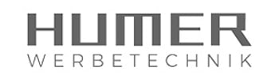
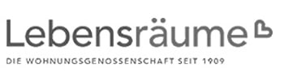

Nachtelefonieren kostet Bürozeit
Eine Meldung reicht nicht. Jemand aus Office, Empfang oder Geschäftsführung muss wieder prüfen, erinnern und nachhaken.
 Büroreinigung Wien · für Unternehmen
Büroreinigung Wien · für UnternehmenFür Büros, Praxen und Betriebe, die nicht ständig nachtelefonieren wollen. Mit fixem Ansprechpartner, geregelter Vertretung und Probereinigung vor der laufenden Betreuung.


Die Küche ist nicht sauber, der Ansprechpartner wechselt, die Vertretung weiß von nichts. Genau dann wird Reinigung zur internen Aufgabe.
Eine Meldung reicht nicht. Jemand aus Office, Empfang oder Geschäftsführung muss wieder prüfen, erinnern und nachhaken.
Neue Personen kennen Räume, Schlüssel, sensible Bereiche und Prioritäten nicht. Damit wird Qualität jedes Mal neu verhandelt.
Krankheit oder Urlaub darf nicht dazu führen, dass Montagfrüh sichtbar liegen bleibt, was längst erledigt sein sollte.
Vor der Zusammenarbeit wird festgelegt, wer Ihr Objekt betreut, wie Vertretung bei Ausfall funktioniert und was bei einer Reklamation passiert. Danach starten Sie mit einer Probereinigung.
Ein Name, eine Nummer, eine verantwortliche Person. Damit eine Meldung nicht bei irgendeiner Hotline verschwindet.
Feste, geschulte Mitarbeiter und geregelte Vertretung — damit Ihr Objekt nicht jede Woche neu erklärt werden muss.
Wenn etwas nicht stimmt, wissen Sie, wen Sie ansprechen — und bis wann das Thema geklärt wird.
Sie sehen zuerst, wie ÖFS arbeitet. Danach entscheiden Sie, ob die laufende Betreuung zum Objekt passt.